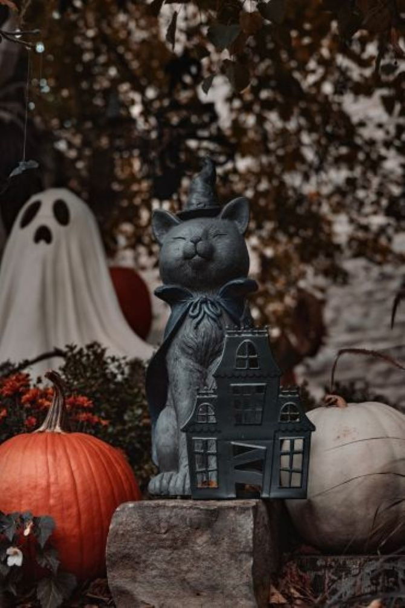
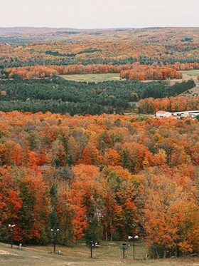
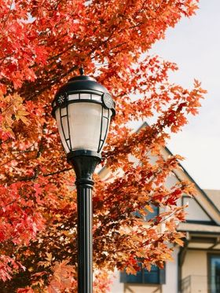
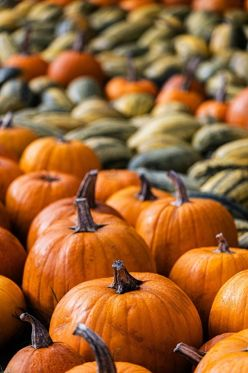
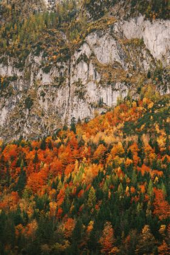
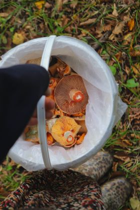
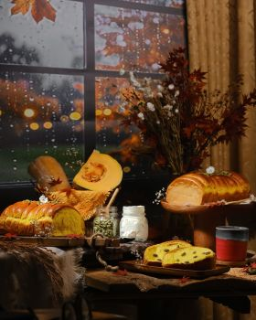
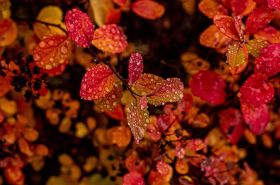
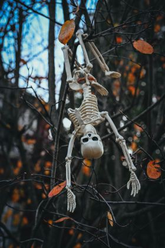
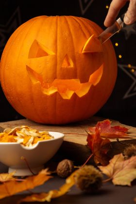

Fall favorites from fairfax VA










Reflection:
It didn't turn out exactly as I wanted it to and I spent most of my time resizing the photos.still I'm sure with time and practice I can get rid of those gaps. I wanted it to wrap if you understand what that means. I might have missed something. I hope I did well on the comments that maybe something to work on. I am so glad the column size works. I am also going to test it on my phone once its on github. I loved finding photos and I now have a far better resource for stock photos to use for art projects.